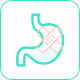

- {{banData3.titleName}} -
长按识别二维码
{{banData3.titleMsg}}
分享链接
走进健康生活
 健康档案
健康档案
{{inspectDate}}
{{totalScore}}
总分
建议您{{inspectDay}}日后再次检测
说明
亲爱的{{userName}}{{sexStr}}你好！
感谢您使用智能筛查机器人进行亚健康评估。现将您的评估结果汇总分析如下，祝您健康！
免责声明：亚健康不必过分担心，亚健康智能筛查只是一个静态的健康评估，评估结果仅供健康管理参考，疾病确诊需要到正规医院检查。
整体免疫能力
您的免疫能力良好偏弱较差！
{{mianyiScore}}分
了解免疫力
先天免疫力 | 后天免疫力
免疫力较低，常出现以下症状：
经常感冒
身体疲惫
愈合能力差

肠胃娇弱
口腔溃疡
频发感染
免疫力异常的人群易患这些疾病：
上呼吸道感染
急慢性胃炎
肠易激综合征
急慢性肠炎
非典型肺炎
肺炎
结肠过敏症
肿瘤
新型冠状病毒肺炎
本次评估以下指标与您的免疫力有关系
营养、心态、睡眠是免疫力的后援支撑！
睡眠
心情
{{item.targetThirdName}}
良好
有待改善
快乐
愉悦
平和
压抑
郁闷
正常
轻度风险
中度风险
十大系统状况
以下是您身体十大系统的评估结果：
异常指标项
以下是您身体存在亚健康风险的指标：

生理年龄
生理年龄
生理年龄是指一个人生理学上的年龄，代表这个人的生命活力。
生理年龄的高低，主要取决于人的生活方式和健康状况。
本报告的生理年龄是在您真实年龄的基础上基于您各个系统的健康状况得出。
您的生理年龄评估为{{age}}岁，各个系统如下：
实时状态
以下是您六大身体实时状态的情况：
{{state.targetThirdName}}
{{state.targetThirdName}}
{{state.inspectExplain}}
{{state.abnormalLevel}}
{{state.analysisResults}}
走进健康生活
欢迎您查看健康报告使用帮助！
一、如何查看您的健康报告？
1、综合评估：智能筛查机器人针对您的整体健康状况给予综合评估得分，分值代表了整体的健康情况，分值越高说明您的身体越好、分值较低时说明您处于亚健康状态；
2、十大系统：智能筛查机器人针对人体10大系统进行评估，分值越高说明您的身体越好，分值越低则反之说明您处于相对比较严重的亚健康状态；
3、健康指标：智能筛查机器人给予10大系统下的健康指标进行评估，评估得分越高分值越高说明您的身体越好、分值较低则反之。智能筛查机器人将根据您的详细指标评估结果给予专属的健康改善建议，基于膳食、营养素、运动和生活方式，请您按照建议积极改善生活习惯、调整饮食结构、合理增加运动锻炼（具体详见报告建议）。健康建议将有助于改善您的亚健康状态、全面提升您的身体素质。
4、实时状态：智能筛查机器人针对您的实时状态给予评估，共计有6项状态评估，有助于您及时了解自己的身体状态。
二、关于报告中提示的问题？
本报告主要起预警作用，对检测出来您已知的慢性健康问题，继续加以重视；对检测出来提示预警或原来您不知道的健康问题，可能仅是⼀种早期症状，应引起重视，但不必紧张，或者去医院做进⼀步检查。或因本次所筛查范围所限未能发现到的情况，仍按原诊断及治疗。
三、关于您的专属健康改善建议？
报告中推送的内容，包含膳食建议、运动建议、健康食谱、营养素建议、调养方法等均作为个人健康管理所需的参考，不作为处方，用户可根据自身情况进行合理搭配选择，旨在希望您通过健康饮食及合理的生活方式提升或改善您的健康状况。
1、综合评估：智能筛查机器人针对您的整体健康状况给予综合评估得分，分值代表了整体的健康情况，分值越高说明您的身体越好、分值较低时说明您处于亚健康状态；
2、十大系统：智能筛查机器人针对人体10大系统进行评估，分值越高说明您的身体越好，分值越低则反之说明您处于相对比较严重的亚健康状态；
3、健康指标：智能筛查机器人给予10大系统下的健康指标进行评估，评估得分越高分值越高说明您的身体越好、分值较低则反之。智能筛查机器人将根据您的详细指标评估结果给予专属的健康改善建议，基于膳食、营养素、运动和生活方式，请您按照建议积极改善生活习惯、调整饮食结构、合理增加运动锻炼（具体详见报告建议）。健康建议将有助于改善您的亚健康状态、全面提升您的身体素质。
4、实时状态：智能筛查机器人针对您的实时状态给予评估，共计有6项状态评估，有助于您及时了解自己的身体状态。
二、关于报告中提示的问题？
本报告主要起预警作用，对检测出来您已知的慢性健康问题，继续加以重视；对检测出来提示预警或原来您不知道的健康问题，可能仅是⼀种早期症状，应引起重视，但不必紧张，或者去医院做进⼀步检查。或因本次所筛查范围所限未能发现到的情况，仍按原诊断及治疗。
三、关于您的专属健康改善建议？
报告中推送的内容，包含膳食建议、运动建议、健康食谱、营养素建议、调养方法等均作为个人健康管理所需的参考，不作为处方，用户可根据自身情况进行合理搭配选择，旨在希望您通过健康饮食及合理的生活方式提升或改善您的健康状况。
康加公司 版权所有 请勿抄袭！
Copyright © 2011-2017 Konstar.All Rights Reserved.
一、如何查看您的健康报告？
1、综合评估：京智康智能筛查机器人针对您的整体健康状况给予综合评估得分，分值代表了整体的健康情况，分值越高说明您的身体越好、分值较低时说明您处于亚健康状态；
2、十大系统：京智康智能筛查机器人针对人体10大系统进行评估，分值越高说明您的身体越好，分值越低则反之说明您处于相对比较严重的亚健康状态；
3、健康指标：京智康智能筛查机器人给予10大系统下的健康指标进行评估，评估得分越高分值越高说明您的身体越好、分值较低则反之。京智康智能筛查机器人将根据您的详细指标评估结果给予专属的健康改善建议，基于膳食、营养素、运动和生活方式，请您按照建议积极改善生活习惯、调整饮食结构、合理增加运动锻炼（具体详见报告建议）。健康建议将有助于改善您的亚健康状态、全面提升您的身体素质。
4、实时状态：京智康智能筛查机器人针对您的实时状态给予评估，共计有6项状态评估，有助于您及时了解自己的身体状态。
二、关于报告中提示的问题？
本报告主要起预警作用，对检测出来您已知的慢性健康问题，继续加以重视；对检测出来提示预警或原来您不知道的健康问题，可能仅是⼀种早期症状，应引起重视，但不必紧张，或者去医院做进⼀步检查。或因本次所筛查范围所限未能发现到的情况，仍按原诊断及治疗。
三、关于您的专属健康改善建议？
报告中推送的内容，包含膳食建议、运动建议、健康食谱、营养素建议、调养方法等均作为个人健康管理所需的参考，不作为处方，用户可根据自身情况进行合理搭配选择，旨在希望您通过健康饮食及合理的生活方式提升或改善您的健康状况。
1、综合评估：京智康智能筛查机器人针对您的整体健康状况给予综合评估得分，分值代表了整体的健康情况，分值越高说明您的身体越好、分值较低时说明您处于亚健康状态；
2、十大系统：京智康智能筛查机器人针对人体10大系统进行评估，分值越高说明您的身体越好，分值越低则反之说明您处于相对比较严重的亚健康状态；
3、健康指标：京智康智能筛查机器人给予10大系统下的健康指标进行评估，评估得分越高分值越高说明您的身体越好、分值较低则反之。京智康智能筛查机器人将根据您的详细指标评估结果给予专属的健康改善建议，基于膳食、营养素、运动和生活方式，请您按照建议积极改善生活习惯、调整饮食结构、合理增加运动锻炼（具体详见报告建议）。健康建议将有助于改善您的亚健康状态、全面提升您的身体素质。
4、实时状态：京智康智能筛查机器人针对您的实时状态给予评估，共计有6项状态评估，有助于您及时了解自己的身体状态。
二、关于报告中提示的问题？
本报告主要起预警作用，对检测出来您已知的慢性健康问题，继续加以重视；对检测出来提示预警或原来您不知道的健康问题，可能仅是⼀种早期症状，应引起重视，但不必紧张，或者去医院做进⼀步检查。或因本次所筛查范围所限未能发现到的情况，仍按原诊断及治疗。
三、关于您的专属健康改善建议？
报告中推送的内容，包含膳食建议、运动建议、健康食谱、营养素建议、调养方法等均作为个人健康管理所需的参考，不作为处方，用户可根据自身情况进行合理搭配选择，旨在希望您通过健康饮食及合理的生活方式提升或改善您的健康状况。
{{someTit}}
{{someTxt}}